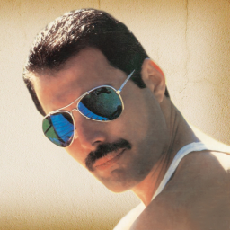
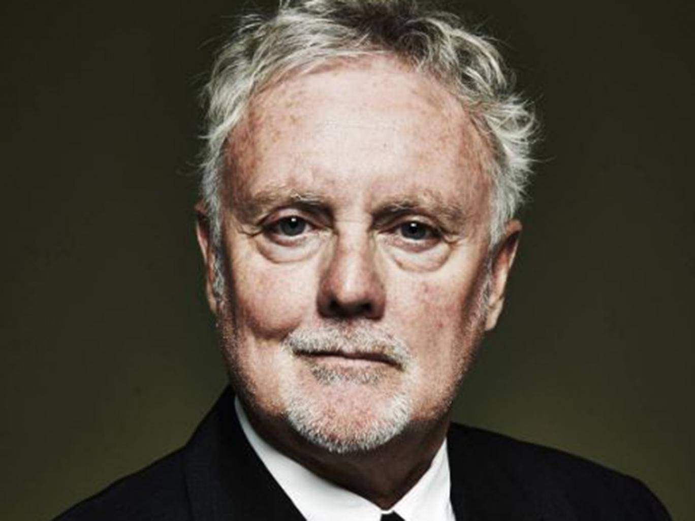
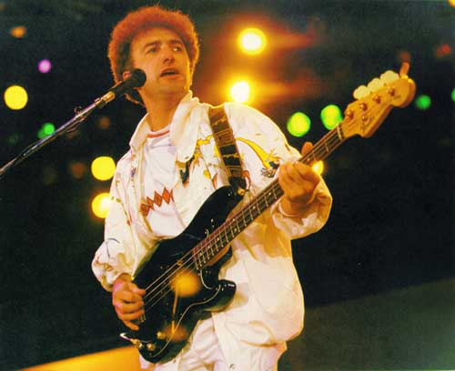
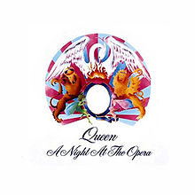
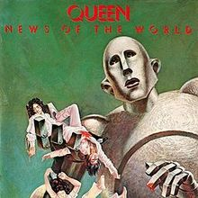
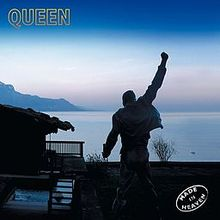
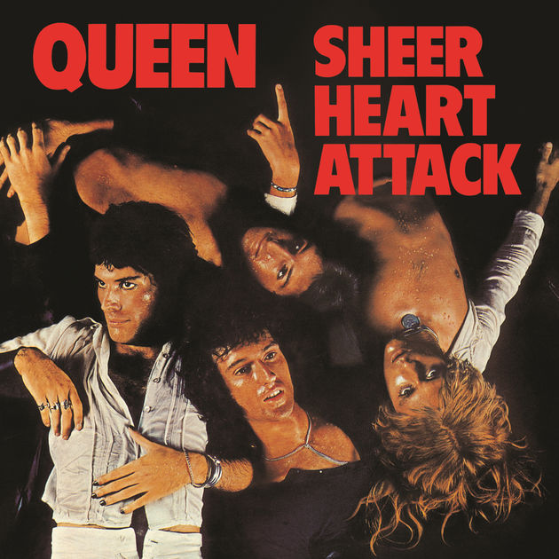

Queen foi uma banda britânica de rock, fundada em 1970. O grupo, formado por Brian May (guitarra e vocais), Freddie Mercury (vocais e piano), John Deacon (baixo) e Roger Taylor (bateria e vocais) é frequentemente citado como um dos expoentes do seu estilo, também sendo um dos recordistas de vendas de discos a nível mundial. A música da banda também é conhecida por ser altamente eclética, variando entre várias vertentes do rock.
Originalmente, a banda Queen surgiu a partir da Smile, banda formada por Brian May, Roger Taylor e o baixista Tim Staffell. Com o fim desse conjunto, Freddie Mercury e John Deacon, juntamente com May e Roger, estabeleceram a formação de um novo grupo em meados de 1970. Os seus dois primeiros álbuns alcançaram pouco sucesso, até que tornaram-se internacionalmente conhecidos por meio dos álbuns Sheer Heart Attack e principalmente por A Night at the Opera, cujos singles "Bohemian Rhapsody" e "You're My Best Friend" alcançaram bons desempenhos. Mais tarde, a popularidade do quarteto estendeu-se com News of the World, em 1977, devido aos hits "We Will Rock You" e "We Are the Champions", bem como com "Crazy Little Thing Called Love" e "Another One Bites the Dust", do elogiado The Game, de 1980.
Durante a década de 1980, o Queen passou a adotar sintetizadores nas suas músicas, e apesar de alguns sucessos como "Under Pressure",a banda recebeu fortes críticas da mídia especializada, perdeu grande parte de sua popularidade em território norte-americano e passou por crises internas,, mesmo mantendo a sua formação. Em contrapartida, o álbum The Works conteve os singles "Radio Ga Ga" e "I Want to Break Free", que alcançaram grande notoriedade no Reino Unido e em países da América do Sul, como o Brasil e Argentina. Em 1985, o conjunto realizou uma das suas performances mais memoráveis no evento Live Aid. Anos depois, o vocalista Freddie Mercury contraiu o vírus da AIDS/SIDA, e após o lançamento de The Miracle e Innuendo, o artista morreu aos 45 anos de idade. Em 1995, foi lançado o último trabalho inédito do quarteto, Made in Heaven, e o baixista John Deacon aposentou-se do mundo musical.
Nos anos seguintes, Brian May e Roger Taylor seguiram carreiras a solo, tocando com vários músicos convidados. Entre eles, destacam-se Paul Rodgers e Adam Lambert, com quem formaram, respectivamente, o Queen + Paul Rodgers e Queen + Adam Lambert. A banda já vendeu mais de trezentos milhões de discos ao redor do mundo, tendo lançado quinze álbuns inéditos, várias coletâneas e trabalhos em vídeo. O grupo foi incluído no Rock and Roll Hall of Fame em 2001 e ganhou uma estrela no Passeio da Fama em Hollywood em 2005.
| Foto | Nome | Data Nascimento | Instrumental |
|---|---|---|---|
|  | freddie mercury | 05/09/1946 | Vocal |
| Brian May | 19/07/1947 | Guitarrista | |
|  | Roger Taylor | 26 /07/1949 | Baterista |
|  | John Deacon | 19/08/1951 | Baixista |
| Capa | Nome | Ano Lançamento |
|---|---|---|
|  | A Night at the Opera | 05/09/1975 |
|  | News of the World | 28/08/1977 |
|
|
A Day at the Races | 10/12/1976 |
|  | Made in Heaven | 6/06/1995 |
|  | Sheer Heart Attack | 8/09/1974 |